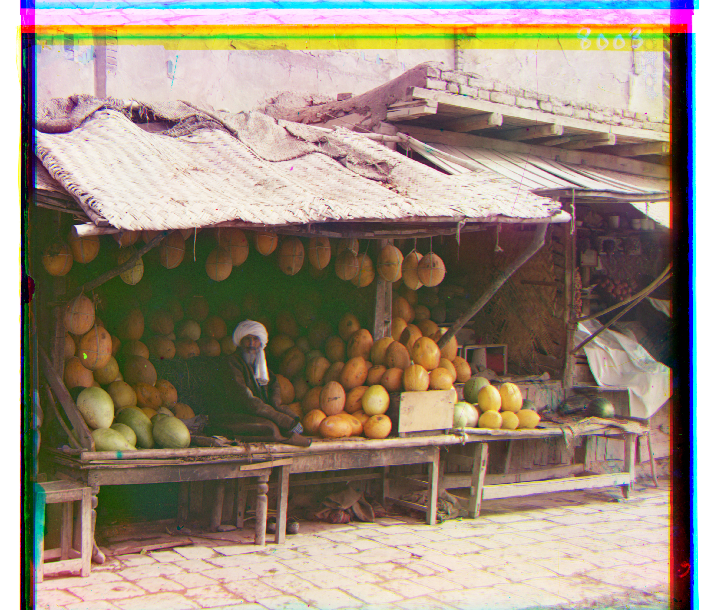

Colorizing the Prokudin-Gorskii photos
Intro
The purpose of this project was to use photos from each of the RGB channels and align them to make a proper color photo.
Approach
The crux of my code was centered around my align function, which basically treats the photo with the blue filter as the anchor
and tries to individually align the green and red filter photos with the anchor. I started with a displacement of [-30, -30] and
moved all the way to [30, 30], and during each displacement, or iteration, I used a function called structural_similarity from the
skimage.metrics library to calculate a metric that measures how similar the anchor is to the image being shifted. How the package actually
works was beyond the scope of our understanding at the time when the project was assigned, but it was approved by the course staff.
For the smaller jpg images, calling this align function one time for both the green and red filter photos was enough to have it align,
but for the bigger tif images, we had to implement something called a gaussian pyramid, which basically takes an image and repeatedly makes
it more coarse till it reaches a small enough size that I could then call this align function on and have it run optimally. I reduced the image
four times, each time making it half the size, so when my align function returned the optimal shift at the coarsest level, I just kept multiplying
that shift by 2 for four iterations. I think used this final shift to align the big images and get my color photo.
Even after implementing this pyramid, there were some images like melons.tif and self_portrait.tif that wouldn't align accurately, so I ended up
cropping the image at the coarsest level by 15% on each of its sides to eradicate any non-overlapping pixels and then I built the image back up,
at which point I aligned it. This seemed to work on all the images and I didn't have any problems at the end.
Images
The following images are from the artist's collection, and this is how they look once aligned. As you can see, there are weird bars around
the edges for most of them, showing that there needed to be some displacement/alignment in order to reconstruct the image properly. For each
image, there are two shifts noted, one for the green-filter image and one for the red-filter image. The units are pixels, so the shifts tell
you how many pixels those specific images had to be moved by.

Shift: green: [48 24] red: [104 40]
Shift: green: [-3 2] red: [3 2]
Shift: green: [24 0] red: [56 -8]
Shift: green: [56 16] red: [112 8]

Shift: green: [80 8] red: [176 16]
Shift: green: [56 24] red: [112 32]
Shift: green: [48 0] red: [88 32]
Shift: green: [3 2] red: [6 3]
Shift: green: [40 16] red: [88 24]
Shift: green: [5 2] red: [12 3]
Shift: green: [80 32] red: [176 40]
Shift: green: green: [56 16] red: [120 16]

Shift: green: [32 -8] red: [136 -24]
Shift: green: [56 0] red: [120 8]
Extra Images
Shift: green: [56 32] red: [128 48]

Shift: green: [48 40] red: [112 56]